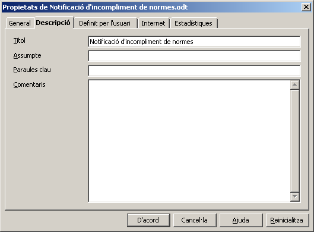

Camps
Els Camps són variables que el LibreOffice té definides i que nosaltres podem inserir en diferents llocs del document.
El LibreOffice porta definits, de base, tot un seguit de camps: data, hora, número de pàgines, recompte de pàgines, assumpte, títol, autor.
A banda d'aquests camps que el LibreOffice té definits per defecte, es pot comptar amb:
- Camps vinculats a una taula d'una base de dades.
- Camps definits per nosaltres mateixos.
Els camps del LibreOffice
Obriu el document fullincomplimentdenormes.odt. Sobre aquest document, anireu fent l'aplicació dels diferents camps del LibreOffice.
Posicioneu-vos al peu de la pàgina.
Data
- Col·loqueu-vos a l'esquerra del peu i inseriu el camp Data.
- Per inserir-lo, cal fer Insereix | Camps | Data.
- Per donar-li format, podeu col·locar-vos damunt de la data i fer aparèixer el menú de context. Seleccioneu Camps…
- Al quadre de diàleg que apareix, podeu escollir entre Data (fixa) (serà la data actual de l'ordinador i no es modificarà) i Data (en aquest cas, la data s'actualitzarà cada vegada que s'obri el document o que es forci l'actualització dels camps).
- En aquest mateix quadre de diàleg, podreu determinar el format que voleu que tingui la data.

Hora
- Col·loqueu-vos a la dreta del peu i inseriu el camp Hora.
- Per inserir-lo, cal fer Insereix | Camps | Hora.
- Per donar-li format, podeu col·locar-vos damunt de l'hora i fer aparèixer el menú de context. Seleccioneu Camps…
- Al quadre de diàleg que apareix, podeu escollir entre Hora (fixa) (serà l'hora actual de l'ordinador i no es modificarà) i Hora (en aquest cas, s'anirà actualitzant cada vegada que s'obri el document o que es forci l'actualització dels camps).
- En aquest mateix quadre de diàleg, podreu determinar el format que voleu que tingui l'hora.

Número de pàgina i recompte de pàgines
- Col·loqueu-vos al mig del peu, escriviu pàg. i inseriu el camp Número de pàgina; escriviu / i inseriu el camp Recompte de pàgines.
- Comproveu-ne el format.
En aquest punt, el peu de pàgina proposat hauria de tenir aquest aspecte:

Assumpte
- Seleccionant la inserció d'aquest camp, el que el LibreOffice Writer fa és inserir el contingut que hàgiu entrat a la casella Fitxer | Propietats… | Descripció | Assumpte.

Títol
- Seleccionant la inserció d'aquest camp, el que el LibreOffice Writer fa és inserir el contingut que hàgiu entrat a la casella Fitxer | Propietats… | Descripció | Títol.
Autor
- Seleccionant la inserció d'aquest camp, el que el LibreOffice Writer fa és inserir el nom especificat per l'autor o l'autora original del document. Ara bé, reinicialitzant aquestes dades (Fitxer | Propietats… | General | Suprimeix) s'agafarà el nom entrat a les opcions de configuració del LibreOffice (Eines | Opcions | LibreOffice | Dades d'usuari | Nom/Cognoms/Inicials).
Els camps vinculats a una taula d'una base de dades
Els emprareu, principalment, en l'obtenció d'etiquetes o la combinació de correu.
Els camps definits per l'usuari
Mitjançant Insereix | Camps | Altres… Ctrl+F2 | Variables, podreu definir una variable. El valor d'aquesta variable el podreu inserir en qualsevol lloc del document actiu on feu la definició.

|
|

|
|